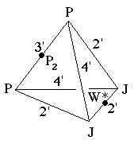
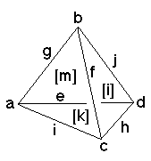

220
220
 222
222 Orbifold Atlas Home Page
Orbifold Atlas Home Page
 Crystallographic Topology Home Page
Crystallographic Topology Home Page
Underlying Topological Space: D3; Figure Pseudo-Symmetry (FPS): 2
Euclidean 3-Orbifold with Invariant-Lattice-Complex Letters
(left), Wyckoff Site Letters (right)
 
| FPS | Mult | Lattice Comp | Group Graph | Wyckoff Set | 2[4]Cover |
| 1-2 | P | 4'3'2' | a, b | ||
| 3-2 | J | 4'2'2' | c, d | ||
| 6-2 | P6[-]J2 | 3'2'<4'>2'2' | e:a-d , f:b-c | ||
| 8-1 | P8[P2]P8 | 4'2'<3'>4'2' | g:a-b | ||
| 12-1 | J4[W*]J4 | 4'2'<2'>4'2' | h:c-d | ||
| 12-2 | P12[-]J4 | 4'3'<2'>4'2' | i:a-c, j:b-d | ||
| 24-2 | m | k:ehi, l:fhj | |||
| 24-2 | m | m1:fgi; m2:egj | |||
| 48 | 1 | n:klm | |||
| 2 | 48-1 | P26[-]W*4 | 2*=3'3'<1>2'2' | n1:g-h | #229(i) |
| Struct-Mult | Critical Points | Heegaard Surf | Wyckoff Cut |
| Scub-1s | P/J/J/P | H3'2'2'm{2'} | g j h i |
| CsCl-1 | PP/P2/W*/JJ | H4'2'4'2'm{1} | e j f i |
220
222
Orbifold Atlas Home Page
Crystallographic Topology Home Page
Page last revised: